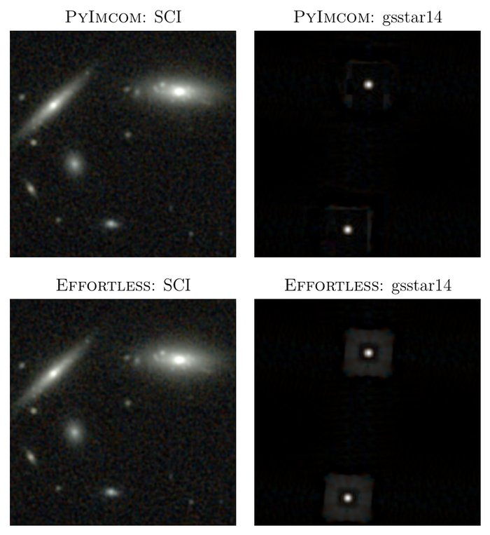

A complete list: first-author papers (including those I wrote alone), then coauthored papers, both grouped by topic, newest first within each topic. Entries give my position among the authors, links to the code where it is public, and, for each coauthored paper, what I contributed. The same list is on NASA ADS (by ORCID).
Papers per year (chart)
first or sole author
coauthor
Papers per year
Year
First or sole author
Coauthor
2021
1
1
2022
0
0
2023
0
0
2024
0
4
2025
3
5
2026
6
4
My papers by year, from the list below: 24 as of October 2026, with preprints counted in 2026. Made with AI assistance (Claude).
24 papers as of October 2026: 10 first-author, 4 of them sole (individual) author, and 14 coauthored; 20 are published in journals and 4 are preprints.
Highlights
Five papers in a sentence each. The full list, with my contribution to every paper, follows.

First two rows and columns of Figure 1 of Cao 2026a.
A faster way to make sharp images from Roman
Effortless turns the Roman Space Telescope's undersampled exposures into well-sampled images with a controlled point spread function, 50 to 60 times faster than IMCOM and with less memory.
I led the rewrite of IMCOM into PyIMCOM, which cut its computing cost by about an order of magnitude; it produced the IMCOM images of the OpenUniverse2024 simulations.
Forecasts of how well Roman's High Latitude Imaging Survey can measure cosmology by combining weak lensing and galaxy clustering; outside knowledge of the shape of the matter power spectrum improves the results by factors of 1.2 to 3.5.
Testing stellar models with thousands of red giants
Comparing stellar models with red giants from the APOKASC-3 catalog shows that the observed red giant branch bump sits about 0.15 dex higher in surface gravity than the models predict.
A correction to the asteroseismic masses of luminous red giants that makes them much less sensitive to how a star's mean density is inferred from its oscillation frequencies.
Efficient Optimal Image Reconstruction for the Nancy Grace Roman Space Telescope and Beyond: II. Implementation of Effortless Kaili Cao arXiv preprint · sole author · arXiv:2607.09862 · ADS · Code Machine learning: I calibrate the measurements with a robust regression (scikit-learn's Theil–Sen estimator) fitted to the measurement errors of injected stars.
Efficient Optimal Image Reconstruction for the Nancy Grace Roman Space Telescope and Beyond: I. First Results with Effortless Kaili Cao arXiv preprint · sole author · arXiv:2607.06674 · ADS · Code
Linear Image Regridding and Coaddition with Oversampled Point Spread Functions: Lessons from 1D Kaili Cao, Roman HLIS Cosmology PIT The Astronomical Journal 171, 140 (2026) · sole individual author · DOI · arXiv:2510.16110 · ADS · Code
Simulating Image Coaddition with the Nancy Grace Roman Space Telescope. IV. Hyperparameter Optimization and Experimental Features Kaili Cao, Christopher M. Hirata, Katherine Laliotis, Masaya Yamamoto, Emily Macbeth, M. A. Troxel, Roman HLIS Cosmology PIT The Astrophysical Journal 998, 304 (2026) · first author · DOI · arXiv:2509.18286 · ADS · Code
Simulating image coaddition with the Nancy Grace Roman Space Telescope: III. Software improvements and new linear algebra strategies Kaili Cao, Christopher M. Hirata, Katherine Laliotis, Masaya Yamamoto, Emily Macbeth, M. A. Troxel The Astrophysical Journal Supplement Series 277, 55 (2025) · first author · DOI · arXiv:2410.05442 · ADS · Code
Cosmology
Fisher Forecasts for Cosmological Yields from 3×2pt Analysis of the Roman Space Telescope High Latitude Imaging Survey Kaili Cao, David H. Weinberg, Vivian Miranda, Nihar Dalal, Tim Eifler, Jiachuan Xu, Haley Bowden, Katarina Markovič, Roman HLIS Cosmology PIT The Astrophysical Journal 1010, 21 (2026) · first author · DOI · arXiv:2601.00438 · ADS
ContEvol formalism: numerical methods based on Hermite spline optimization Kaili Cao Mathematics 13, 3981 (2025) · sole author · DOI · arXiv:2405.05188 · ADS · Code
Studying galaxy cluster morphological metrics with Mock-X Kaili Cao, David J. Barnes, Mark Vogelsberger Monthly Notices of the Royal Astronomical Society 503, 3394-3413 (2021) · first author · DOI · arXiv:2006.10752 · ADS
Stars
Modeling APOKASC-3 red giants: I. The first dredge-up and red giant branch bump Kaili Cao, Marc H. Pinsonneault The Astrophysical Journal 997, 120 (2026) · first author · DOI · arXiv:2501.14867 · ADS · Code · Zenodo
Toward Accurate Asteroseismic Masses for Luminous Giants Kaili Cao, Marc H. Pinsonneault The Astrophysical Journal Letters 990, L26 (2025) · first author · DOI · arXiv:2508.06609 · ADS Machine learning: I trained a support vector regression (scikit-learn) on APOKASC-3 to emulate its Δν correction (cross-validation score 0.97), and a similar one for the ages.
Coauthored papers
Images
Robust Photometry for Roman High-Latitude Imaging Survey Cosmology Using Roman and Rubin Imaging Chun-Hao To, Tae-Hyeon Shin, Chihway Chang, Christopher Hirata, Brett H. Andrews, Ami Choi, et al. (21 authors, including Kaili Cao) arXiv preprint · coauthor (10 of 21) · arXiv:2607.09849 · ADS I contributed my expertise in IMCOM.
Removing correlated noise stripes from the Nancy Grace Roman Space Telescope survey images Katherine Laliotis, Christopher M. Hirata, Emily Macbeth, Kaili Cao Publications of the Astronomical Society of Japan 78, 810 (2026) · coauthor (4 of 4) · DOI · arXiv:2512.05949 · ADS · Code I led the development of the PyIMCOM software, the platform for this work, and commented on the manuscript.
OpenUniverse2024: A shared, simulated view of the sky for the next generation of cosmological surveys OpenUniverse, The LSST Dark Energy Science Collaboration, The Roman HLIS Project Infrastructure Team, The Roman RAPID Project Infrastructure Team, The Roman Supernova Cosmology Project Infrastructure Team, A. Alarcon, et al. (61 authors, including Kaili Cao) Monthly Notices of the Royal Astronomical Society 544, 3799-3823 (2025) · coauthor (14 of 61) · DOI · arXiv:2501.05632 · ADS I led the development of the PyIMCOM software used to produce the IMCOM coadds, and contributed to writing the paper.
Analysis of biasing from noise from the Nancy Grace Roman Space Telescope: implications for weak lensing Katherine Laliotis, Emily Macbeth, Christopher M. Hirata, Kaili Cao, Masaya Yamamoto, Michael Troxel Publications of the Astronomical Society of the Pacific 136, 124506 (2024) · coauthor (4 of 6) · DOI · arXiv:2410.11088 · ADS I led the development of the PyIMCOM software used to combine the images, took part in discussions of the data analysis methods, and commented on the manuscript.
Simulating image coaddition with the Nancy Grace Roman Space Telescope: II. Analysis of the simulated images and implications for weak lensing Masaya Yamamoto, Katherine Laliotis, Emily Macbeth, Tianqing Zhang, Christopher M. Hirata, M. A. Troxel, et al. (19 authors, including Kaili Cao) Monthly Notices of the Royal Astronomical Society 528, 6680-6705 (2024) · coauthor (7 of 19) · DOI · arXiv:2303.08750 · ADS I helped find some of the code's known issues and address them in its working version.
Simulating image coaddition with the Nancy Grace Roman Space Telescope: I. Simulation methodology and general results Christopher M. Hirata, Masaya Yamamoto, Katherine Laliotis, Emily Macbeth, M. A. Troxel, Tianqing Zhang, et al. (19 authors, including Kaili Cao) Monthly Notices of the Royal Astronomical Society 528, 2533-2561 (2024) · coauthor (7 of 19) · DOI · arXiv:2303.08749 · ADS I helped find some of the code's known issues and address them in its working version.
Cosmology
Accurate modeling for 3×2pt analyses in Roman and Rubin: a study of model approximations Junzhou Zhang, Chihway Chang, Jiachuan Xu, Vivian Miranda, Chun-Hao To, Haley Bowden, et al. (9 authors, including Kaili Cao) arXiv preprint · coauthor (7 of 9) · arXiv:2606.23781 · ADS I contributed my experience with Fisher forecasts.
Characterizing hydrostatic mass bias with Mock-X David J. Barnes, Mark Vogelsberger, Francesca A. Pearce, Ana-Roxana Pop, Rahul Kannan, Kaili Cao, Scott T. Kay, Lars Hernquist Monthly Notices of the Royal Astronomical Society 506, 2533-2550 (2021) · coauthor (6 of 8) · DOI · arXiv:2001.11508 · ADS I gave feedback on early data products of the Mock-X framework, took part in discussions of relaxation criteria, and commented on the manuscript.
Stars
The YREC Stellar Evolution Code: Public Data Release Marc H. Pinsonneault, Jennifer L. van Saders, Lyra Cao, Jamie Tayar, Franck Delahaye, Leslie M. Morales, et al. (14 authors, including Kaili Cao) The Astrophysical Journal 1006, 220 (2026) · coauthor (13 of 14) · DOI · arXiv:2603.25792 · ADS · Code I took part in maintaining and modernizing the YREC code and in related discussions, and commented on the manuscript.
Beyond the Nyquist frequency: Asteroseismic catalog of undersampled Kepler late subgiants and early red giants B. Liagre, R. A. García, S. Mathur, M. H. Pinsonneault, A. Serenelli, J. C. Zinn, et al. (12 authors, including Kaili Cao) Astronomy & Astrophysics 702, A144 (2025) · coauthor (7 of 12) · DOI · arXiv:2508.15654 · ADS I provided theoretical predictions of first dredge-up signals and took part in related discussions.
Modeling Asteroseismic Yields for the Roman Galactic Bulge Time-Domain Survey Trevor J. Weiss, Noah J. Downing, Marc H. Pinsonneault, Joel C. Zinn, Dennis Stello, Timothy R. Bedding, et al. (13 authors, including Kaili Cao) The Astrophysical Journal 987, 181 (2025) · coauthor (7 of 13) · DOI · arXiv:2503.04999 · ADS I took part in discussions of Roman asteroseismology and commented on the manuscript.
Red giants evolutionary status determination: the complete Kepler catalog M. Vrard, M. H. Pinsonneault, Y. Elsworth, M. Hon, T. Kallinger, J. Kuszlewicz, et al. (15 authors, including Kaili Cao) Astronomy & Astrophysics 697, A165 (2025) · coauthor (11 of 15) · DOI · arXiv:2411.03101 · ADS I took part in discussions of how to tell first-ascent red giant branch stars from asymptotic giant branch stars.
APOKASC-3: The Third Joint Spectroscopic and Asteroseismic catalog for Evolved Stars in the Kepler Fields Marc H. Pinsonneault, Joel C. Zinn, Jamie Tayar, Aldo Serenelli, Rafael A. Garcia, Savita Mathur, et al. (41 authors, including Kaili Cao) The Astrophysical Journal Supplement Series 276, 69 (2025) · coauthor (19 of 41) · DOI · arXiv:2410.00102 · ADS I took part in discussions of the catalog, contributed substantially to the uncertainties of its spectroscopic observables, and contributed to writing the paper.
Nature vs. Nurture: Distinguishing Effects from Stellar Processing and Chemical Evolution on Carbon and Nitrogen in Red Giant Stars John D. Roberts, Marc H. Pinsonneault, Jennifer A. Johnson, Joel C. Zinn, David H. Weinberg, Mathieu Vrard, et al. (19 authors, including Kaili Cao) Monthly Notices of the Royal Astronomical Society 530, 149-166 (2024) · coauthor (11 of 19) · DOI · arXiv:2403.03249 · ADS I contributed to the uncertainties of spectroscopic observables in the APOKASC-3 catalog, provided theoretical insight into the first dredge-up, and commented on the manuscript.
Dissertation
Renovating Analysis Infrastructure for the Next Generation of Astronomical Surveys Kaili Cao PhD dissertation, The Ohio State University, 2026 · Defense slides (PDF) · OhioLINK ETD (forthcoming) Brings together my work on red giant stars and on preparing the Roman Space Telescope's High Latitude Imaging Survey, from stellar interiors to the large-scale structure of the Universe, and from theoretical modeling to data analysis. Its concluding chapter on future work is the source of the ideas on my research pages.
Terms on this page (1)
IMCOM
Short for IMage COMbination: an image-combination method that chooses the weights of input pixels so that the output image has a PSF as close as possible to a target the user specifies, while keeping the noise under control. PyIMCOM is its modern implementation for Roman, and Effortless is a faster successor.